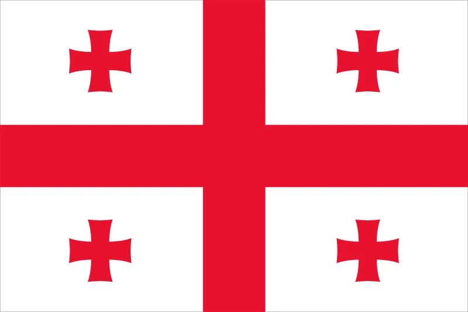
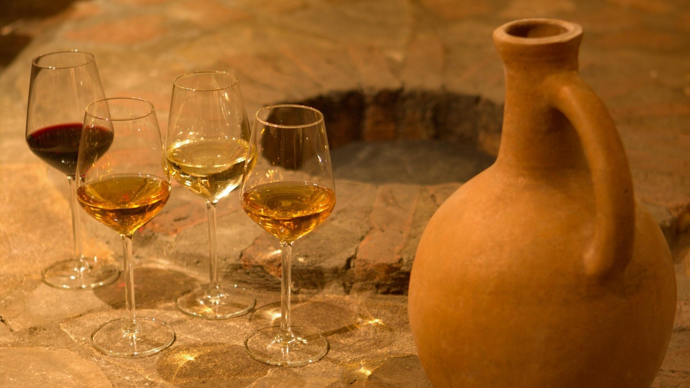

Wine Culture
Wine is more than just a beverage—it is a reflection of culture, history, and the land from which it comes. Across the world, wine carries with it stories of ancient traditions, local flavors, and artisanal craftsmanship. Among the countries celebrated for their wine heritage, Georgia stands out as the cradle of wine civilization. Archaeological discoveries show that Georgians were making wine over 8,000 years ago, using unique clay vessels called qvevri to ferment and store wine—a method still practiced today and recognized by UNESCO as part of the Intangible Cultural Heritage of Humanity.
In Georgia, wine is woven into daily life, hospitality, and rituals. The traditional Georgian feast, known as a supra, features an abundance of wine, accompanied by toasts led by a tamada (toastmaster), celebrating friendship, family, and life itself. The diverse climates and terrains of Georgia—from the lush valleys of Kakheti to the mountainous regions of Svaneti—allow for a wide variety of grapes, each producing wines with distinct flavors, aromas, and colors.
Globally, wine culture has evolved to embrace both tradition and innovation. Wine tasting, vineyard tours, and the art of pairing wine with food have become cultural experiences, inviting people to slow down and savor life. Yet, the story of Georgia reminds us that at its heart, wine is not just about taste—it is about connection, history, and a shared celebration of nature’s bounty.
Pomegranate Wine Culture
Pomegranate wine is a unique and vibrant expression of winemaking, celebrated for its rich color, tangy sweetness, and deep cultural roots. Unlike traditional grape wine, pomegranate wine is crafted from the ruby-red seeds of the pomegranate, a fruit that has symbolized fertility, prosperity, and life in many cultures for thousands of years. Its origins trace back to regions where pomegranates have flourished for centuries, including the Middle East, the Caucasus, and parts of the Mediterranean.
In countries like Georgia, Armenia, and Iran, pomegranate wine is more than a drink—it is a cultural emblem. In Georgia, where wine culture is ancient and deeply ingrained, pomegranate wine is gaining recognition as part of the modern revival of traditional winemaking techniques. Artisans often use the same careful fermentation methods employed for grape wines, sometimes aging the wine in clay vessels or wooden barrels, which imparts a complex aroma and depth of flavor.